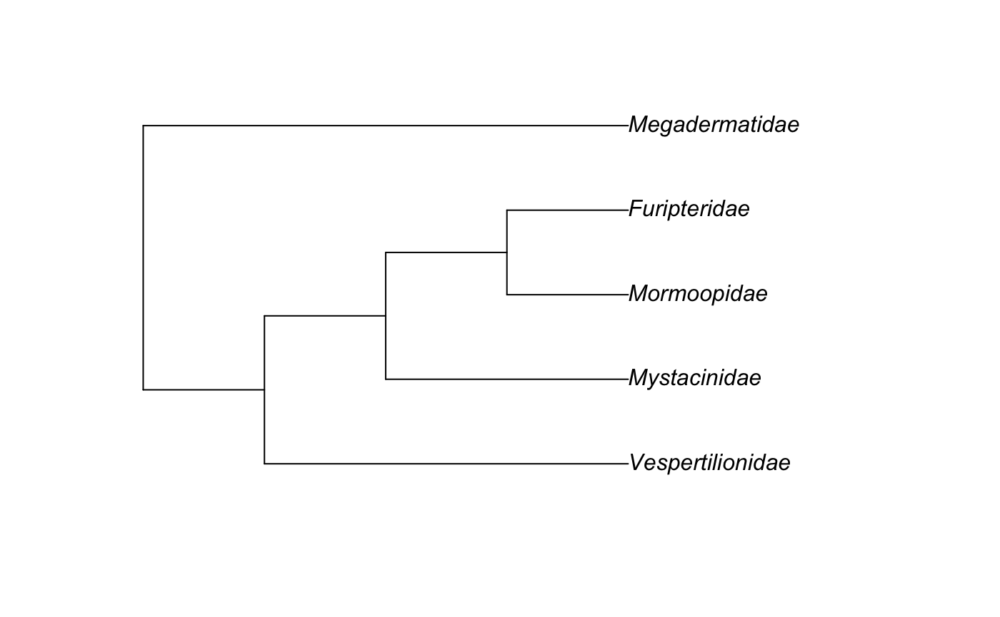

Summer Research Project: Bats
report3.rmdMy Report
Introduction
In this report I use the Open Tree of Life alongside Physcraper to create and access an updated phylogentic tree of all bats and delve into the multifunctionalities of Rstudio using the ‘rotl’ package to interact with The open tree of life services and the Open Tree Taxonomy.
There are over 1000 different species of bats. These extraordinary flying mammals use their hands to fly; granted their order name chiroptera, which translates in Greek to ‘Hand Wings’. Each of their fingers are connected to one another through a thin layer of skin which allows these nocturnal mammals to take off into flight. Chiroptera are the only mammals with the capability of continued flight.
The Open Tree of Life constructs an informative,comprehensive, and digitally-available dynamic tree of all life by synthesizing published phylogentic trees with taxonomic data to create a an comprehensive tree of all life. We can search the Open Tree Taxonomy for specific names or Ids. To observe and interact with the synthetic tree we can use One Zoom.To specifically view Chiroptera in the tree, you can use the following link One Zoom - Chiroptera. The Open tree of Life aims at assembling a comprehensice phlogenetic tree for all named species.
We can use tools from the Open Tree of Life alongside RStudio to extract, construct, and update phylogenetic Trees. The Open Tree Taxonomy (OTT) synthesizs taxonomic information and assigns taxons with a unique identifier known as an OTT Id. To be able to use OTT Ids and interact with the open tree of life services we will need to install and use the rotl package. This package interface will allow the extraction of phylogenetic trees, information about the studies to build the synthetic tree, and ott ids using RStudio.
Interacting With The Open Tree Of Life
To get the OTT ids for a set of taxa we use the ‘rotl’ package. Any function from rotl that start with ‘trns_’ interacts with the OTT. The function tnrs_match_names used below allows us to deal with synonyms and misspellings and allows the linkage of scientific names to a corresponding unique OTT id. We then assign our taxon name to resolved_names object.
my_taxa <- c("chiroptera")
resolved_names <- rotl::tnrs_match_names(names = my_taxa)
resolved_names
#> search_string unique_name approximate_match ott_id is_synonym flags
#> 1 chiroptera Chiroptera FALSE 574724 FALSE
#> number_matches
#> 1 1It is useful to know the class of an object since it makes manipulating objects much easier with different functions.When we create a class we create a data structure that will house all the objects that belong to a specific class. This is done for ease of access, organization, and clarity.
The class of the resolved_names object allows us to view the search string name, the unique name ,and the ott_id in respect to the open tree of life. The class of the resolved_names object which includes trns_match_names, allows us to view two outputs : “match_names” and “data_frame”.
In the following chunk, we subset the object to obtain certain columns and if needed, manipulate the formula to extract a specific component from the row. Since there is no function that allows us to extract the values from a row of match_names, we need to use resolved_names and indexing. Subsetting ultimately allows us to get values from all columns of one row.
resolved_names[1,]
#> search_string unique_name approximate_match ott_id is_synonym flags
#> 1 chiroptera Chiroptera FALSE 574724 FALSE
#> number_matches
#> 1 1Our goal is to obtain the ott_id for bats (Chiroptera). In order to extract the information we need to subset using the column name ‘unique_name’ in the second part of the formula ‘resolved_names’. This way, we can extract one specific value ( ) from the column we want using the column name.
An OTT id is a unique numerical identifier assigned to a taxon in the Open Tree Taxonomy. Every taxon has a specific OTT id. These OTT ids allow us to interact with the Open Tree of Life.
If we want to obtain the unique name of the taxon used in the synthetic open tree of life, we can use the following function. This function takes into account our previous output of data and extract a specific value.
The next code gives all information from the current synthetic Open Tree:
rotl::tol_about()
#>
#> OpenTree Synthetic Tree of Life.
#>
#> Tree version: opentree12.3
#> Taxonomy version: 3.2draft9
#> Constructed on: 2019-12-23 11:41:23
#> Number of terminal taxa: 2391916
#> Number of source trees: 1216
#> Number of source studies: 1162
#> Source list present: false
#> Root taxon: cellular organisms
#> Root ott_id: 93302
#> Root node_id: ott93302The previous code gave an output of the information from the Synthetic Open Tree Of Life (OTOL) using the package rotl.
This function assigns our matched name ‘chiroptera’ to “Chiroptera_ott_id” and will therefore extract the ott_id we wanted for chiroptera once we run it.
The following code will help us get the Chiroptera subtree from the synthetic tree:
chiroptera_subtree <- rotl::tol_subtree(ott_id = chiroptera_ott_id)
ape::Ntip(chiroptera_subtree)
#> [1] 1820
ape::plot.phylo(chiroptera_subtree, cex = 0.1, type = "fan")# or just plot(my_tree, cex = 0.1)
# because it has no branch lengths, it does not plot pretty. We have to get branch lengths for it.It is relevant to note that our taxon is monophyletic since nonmonophyletic taxa contain ‘invalid’ or ‘broken’ data. When the taxon is ‘broken’, its ott_id is not assigned to a node in the synthetic tree. The following code will tell us if the taxon is monophyletic:
The above code confirmed that indeed our taxon is monophyletic by giving the output ‘TRUE’.
OTT ids and node ids allow us to interact with the synthetic OTOL.
chiroptera_node_info <- rotl::tol_node_info(chiroptera_ott_id)
chiroptera_node_info
#>
#> OpenTree node.
#>
#> Node id: ott574724
#> Number of terminal descendants: 1820
#> Is taxon: TRUE
#> Name: Chiroptera
#> Rank: order
#> ott id: 574724One way to obtain branch lengths proportional to time is with the datelife package. An alternative way to get branch lengths on a tree is to arbitrarily generate them with ape::compute.brlen(). In the following section we will use the datelife package.
Example 1: Chiroptera Families
First we will get all families from Chiroptera and their OTT ids.
chiroptera_families
#> $Chiroptera
#> ott_id rank
#> Pteropodidae 574742 family
#> Myzopodidae 6788 family
#> Molossidae 238416 family
#> Vespertilionidae 238434 family
#> Thyropteridae 267980 family
#> Rhinopomatidae 267987 family
#> Hipposideridae 316928 family
#> Craseonycteridae 32051 family
#> Rhinolophidae 635025 family
#> Mystacinidae 759857 family
#> Noctilionidae 759861 family
#> Furipteridae 1060468 family
#> Emballonuridae 581454 family
#> Phyllostomidae 289151 family
#> Nycteridae 1018272 family
#> Natalidae 1018309 family
#> Mormoopidae 292475 family
#> Rhinonycteridae 5819794 family
#> Megadermatidae 813048 familyWe will use Chiroptera families’ OTT ids to retrieve a tree from the Open Tree Of Life.
First, we must Figure out how to extract the OTT ids as a vector.
chiroptera_families$Chiroptera$ott_id
#> [1] 574742 6788 238416 238434 267980 267987 316928 32051 635025
#> [10] 759857 759861 1060468 581454 289151 1018272 1018309 292475 5819794
#> [19] 813048Now we can use the OTT ids to extract a subtree from the Open Tree of Life.
chiroptera_families_subtree <- rotl::tol_induced_subtree(chiroptera_families$Chiroptera$ott_id)
#> Warning in collapse_singles(tr, show_progress): Dropping singleton nodes with
#> labels: Megachiroptera ott754606, mrcaott31957ott221782, mrcaott31957ott798260Lets look at the structure of the Chiroptera families subtree.
chiroptera_families_subtree
#>
#> Phylogenetic tree with 18 tips and 17 internal nodes.
#>
#> Tip labels:
#> Vespertilionidae_ott238434, Molossidae_ott238416, Natalidae_ott1018309, Myzopodidae_ott6788, Phyllostomidae_ott289151, Mormoopidae_ott292475, ...
#> Node labels:
#> Chiroptera ott574724, mrcaott6790ott6794, mrcaott6790ott6795, mrcaott6790ott130215, mrcaott6794ott73572, mrcaott6794ott9379, ...
#>
#> Rooted; no branch lengths.Plotting Tree Of Chiroptera families.
Example 2 : Five Chiroptera Taxa That I Like
To get an even smaller bat tree with 5 taxa, first get the scientific names of families, genera, or species of bat. Then run rotl::tnrs_match_names to get the OTT ids.
Here I chose the following five Taxa: “Megadermatidae”,“Mormoopidae”,“Vespertilionidae”,“Mystacinidae”,and “Furipteridae.”
my_ott_ids <- rotl::tnrs_match_names(c("Megadermatidae","Mormoopidae","Vespertilionidae","Mystacinidae","Furipteridae"))We will need to extract the OTT ids only, because now we have the whole table.
my_ott_ids
#> search_string unique_name approximate_match ott_id is_synonym flags
#> 1 megadermatidae Megadermatidae FALSE 813048 FALSE
#> 2 mormoopidae Mormoopidae FALSE 292475 FALSE
#> 3 vespertilionidae Vespertilionidae FALSE 238434 FALSE
#> 4 mystacinidae Mystacinidae FALSE 759857 FALSE
#> 5 furipteridae Furipteridae FALSE 1060468 FALSE
#> number_matches
#> 1 1
#> 2 1
#> 3 1
#> 4 1
#> 5 1Retrieving a subtree from the Open Tree Of Life, with taxon names as tip labels.
my_tree <- rotl::tol_induced_subtree(my_ott_ids$ott_id, label_format = "name")
#> Warning in collapse_singles(tr, show_progress): Dropping singleton nodes
#> with labels: mrcaott6790ott6795, mrcaott6790ott130215, mrcaott6794ott73572,
#> mrcaott6794ott9379, mrcaott9379ott167316, mrcaott263938ott604404,
#> mrcaott604404ott1060469, mrcaott10730ott31957, mrcaott31957ott79793,
#> mrcaott79793ott289141This code chunk provides us with the info of our tree.
my_tree
#>
#> Phylogenetic tree with 5 tips and 4 internal nodes.
#>
#> Tip labels:
#> [1] "Vespertilionidae" "Mormoopidae" "Furipteridae" "Mystacinidae"
#> [5] "Megadermatidae"
#> Node labels:
#> [1] "Chiroptera" "mrcaott6790ott6794" "mrcaott9379ott604409"
#> [4] "mrcaott9379ott263938"
#>
#> Rooted; no branch lengths.To plot the above tree, the ape functiopn “plot.phylo” is used.

TASK 5: Describe how do you get help to use a function in R?
Getting the dates available for the five taxa tree we will use the function datelife::get_datelife_result, but how do we use that function. Let’sget some help with ?
Now we can run the function with some confidence.
YOUR_DATELIFE_RESULT_OBJECT <- datelife::get_datelife_result(input = my_tree, get_spp_from_taxon = TRUE)TASK 7: Take the output from datelife::get_datelife_result and run the following code chunk.
chiroptera_phylo_all <- datelife::summarize_datelife_result(YOUR_DATELIFE_RESULT_OBJECT, summary_format = "phylo_all")names(chiroptera_phylo_all)
#> [1] "Shi, Jeff J., Daniel L. Rabosky. 2015. Speciation dynamics during the global radiation of extant bats. Evolution 69 (6): 1528-1545"
#> [2] "Bininda-Emonds, Olaf R. P., Marcel Cardillo, Kate E. Jones, Ross D. E. MacPhee, Robin M. D. Beck, Richard Grenyer, Samantha A. Price, Rutger A. Vos, John L. Gittleman, Andy Purvis. 2007. The delayed rise of present-day mammals. Nature 446 (7135): 507-512"
#> [3] "Bininda-Emonds, Olaf R. P., Marcel Cardillo, Kate E. Jones, Ross D. E. MacPhee, Robin M. D. Beck, Richard Grenyer, Samantha A. Price, Rutger A. Vos, John L. Gittleman, Andy Purvis. 2007. The delayed rise of present-day mammals. Nature 446 (7135): 507-512"
#> [4] "Bininda-Emonds, Olaf R. P., Marcel Cardillo, Kate E. Jones, Ross D. E. MacPhee, Robin M. D. Beck, Richard Grenyer, Samantha A. Price, Rutger A. Vos, John L. Gittleman, Andy Purvis. 2007. The delayed rise of present-day mammals. Nature 446 (7135): 507-512"
#> [5] "Hedges, S. Blair, Julie Marin, Michael Suleski, Madeline Paymer, Sudhir Kumar. 2015. Tree of life reveals clock-like speciation and diversification. Molecular Biology and Evolution 32 (4): 835-845"
#> [6] "Lack J.B., & Van den bussche R.A. 2010. Identifying the Confounding Factors in Resolving Phylogenetic Relationships in Vespertilionidae. Journal of Mammalogy, ."
#> [7] "Dumont E.R., Davalos L.M., Goldberg A., Santana S.E., Rex K., & Voigt C.C. 2012. Morphological innovation, diversification and invasion of a new adaptive zone. Proceedings of the Royal Society B: Biological Sciences, 279: 1797-1805."plot_phylo_all plots the output of summarize_datelife_results.The output corresponds to all the chronograms that have at least two of the taxa that are given as input to the get_datelife_result.

Example 3: All the Chiroptera!
Let’s get a full Chiroptera subtree from the Open Tree of Life.
chiroptera_node_subtree <- rotl::tol_subtree(node_id = chiroptera_node_info$node_id, label = "name")
head(chiroptera_node_subtree$tip.label)
#> [1] "Kerivoula_hardwickii" "Kerivoula_titania" "Kerivoula_kachinensis"
#> [4] "Kerivoula_intermedia" "Kerivoula_minuta" "Kerivoula_whiteheadi"When you run the get_datelife_result function it will get node ages from published trees that contain at least two taxa in your search:
The datelife result object is not a tree but a list of tables with the node ages for each pair of taxa from your search. For our 1800 species in the Chiroptera, we got the following trees with node ages:
names(chiroptera_dr)
#> [1] "Shi, Jeff J., Daniel L. Rabosky. 2015. Speciation dynamics during the global radiation of extant bats. Evolution 69 (6): 1528-1545"
#> [2] "Bininda-Emonds, Olaf R. P., Marcel Cardillo, Kate E. Jones, Ross D. E. MacPhee, Robin M. D. Beck, Richard Grenyer, Samantha A. Price, Rutger A. Vos, John L. Gittleman, Andy Purvis. 2007. The delayed rise of present-day mammals. Nature 446 (7135): 507-512"
#> [3] "Bininda-Emonds, Olaf R. P., Marcel Cardillo, Kate E. Jones, Ross D. E. MacPhee, Robin M. D. Beck, Richard Grenyer, Samantha A. Price, Rutger A. Vos, John L. Gittleman, Andy Purvis. 2007. The delayed rise of present-day mammals. Nature 446 (7135): 507-512"
#> [4] "Bininda-Emonds, Olaf R. P., Marcel Cardillo, Kate E. Jones, Ross D. E. MacPhee, Robin M. D. Beck, Richard Grenyer, Samantha A. Price, Rutger A. Vos, John L. Gittleman, Andy Purvis. 2007. The delayed rise of present-day mammals. Nature 446 (7135): 507-512"
#> [5] "Hedges, S. Blair, Julie Marin, Michael Suleski, Madeline Paymer, Sudhir Kumar. 2015. Tree of life reveals clock-like speciation and diversification. Molecular Biology and Evolution 32 (4): 835-845"
#> [6] "Lack J.B., & Van den bussche R.A. 2010. Identifying the Confounding Factors in Resolving Phylogenetic Relationships in Vespertilionidae. Journal of Mammalogy, ."
#> [7] "Dumont E.R., Davalos L.M., Goldberg A., Santana S.E., Rex K., & Voigt C.C. 2012. Morphological innovation, diversification and invasion of a new adaptive zone. Proceedings of the Royal Society B: Biological Sciences, 279: 1797-1805."We have 7 studies in OpenTree with ages for the Chiroptera. The code above provided all references of the seven studies as an output.
To get the actual chronograms we need to run another function:
chiroptera_phylo_all <- datelife::summarize_datelife_result(chiroptera_dr, summary_format = "phylo_all")
# We will write this object into a file, bc it takes a long time to run
save(chiroptera_phylo_all, file="data/chiroptera_phylo_all.RData")Now, we have to load it into the R work space so it is available for the next part
The following function will allow us to plot the Tree with the ages.
However, they are quite large, so we will not show them here for now.
Summarizing node ages is slow so we will save the output of datelife::summarize_datelife_result in the data folder. This function summarizes the node information from all the chronograms in chiroptera_phylo_all.
chiroptera_phylo_median <- datelife::summarize_datelife_result(chiroptera_dr, summary_format = "phylo_median")
chiroptera_phylo_medianTo plot the chronogram we will use ape::plot.phylo
Updating a Chiroptera chronogram with Python
The Physcraper software allows to update a published phylogeny with new DNA sequences from GenBank.
This can be your task for the fall if you are interested.